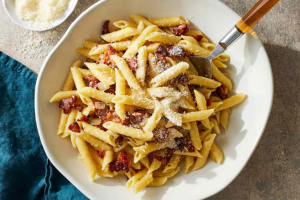

Cheesy Bacon Pasta
with garlicky broccoli
Ingredients
- 100g Bacon Strips
- 170g Penne
- 113ml Cream
- 227g Broccoli
- 2 Garlic Cloves
- 10g Cream Sauce Spice Blend
- 1/4 cup Parmesan Cheese, shredded
- 5g Italian Herb Spice Blend
- Cooking Oil
- Butter
- Salt
Instructions
Cook Bacon:
- Preheat oven to 450°F and bring a large pot of salted water to a boil
- Wash and dry produce
- Line baking sheet with aluminum foil and arrange bacon
- Roast in the middle of oven for 10-12 min, until crisp and cooked through
- Transfer bacon to paper towel-lined plate to cool
- When cool enough, roughly chop bacon
Prep Ingredients:
- Meanwhile, cut broccoli into 1-inch pieces
- Peel, then mince or grate garlic
Cook Penne:
- To the boiling water, ass penne. Cook for 10-12 min, stirring occasionally
- Reserve 1/2 cup pasta water
- Strain penne, then transfer to a large bowl and toss with 1 tbsp oil
- Set aside
Cook Broccoli:
- Meanwhile, in a large non-stick pan, heat 1 tbsp butter over medium-high
- When butter is melted, add broccoli and 2 tbsp water. Season with salt
- Cook for 4-6 min, stirring occasionally, until broccoli is tender-crisp and water has evaporated
- Transfer to a medium bowl, then cover to keep warm
Make Sauce:
- Heat the same pan over medium
- When pan is hot, add 1 tbsp butter
- When butter is melted, add Cream Sauce Spice Blend, garlic, and Italian Herb Spice Blend
- Cook for 1 min, stirring frequently, until fragrant
- Stir in cream and reserved pasta water. Bring to a boil
- Once boiling, reduce heat to medium-low, then add half the parmesan. Stir until parmesan melts
- NOTE: If sauce becomes too thick, loosen by adding 1 tbsp water at a time until sauce reaches desired consistency
Finish and Serve:
- Stir penne and broccoli into pot with sauce
- Divide pasta between bowls and sprinkle with bacon and remaining parmesan